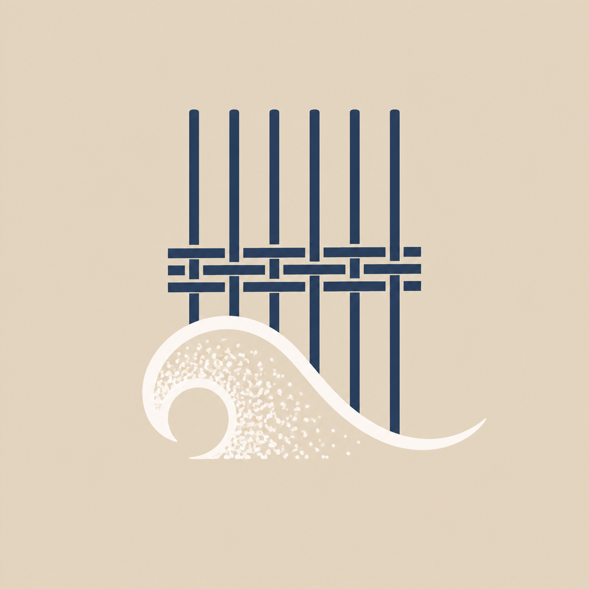

Terrace table · sunset
Wind-facing linen, two courses, catch board.
Request table
Salt LoomHarbor wind through woven linen — seafood, salt, and honest stakes.
Place · harbor terrace, dusk teal water
Promise only after seal — shellfish stake stays above the fold.
Wind-facing linen, two courses, catch board.
Request table